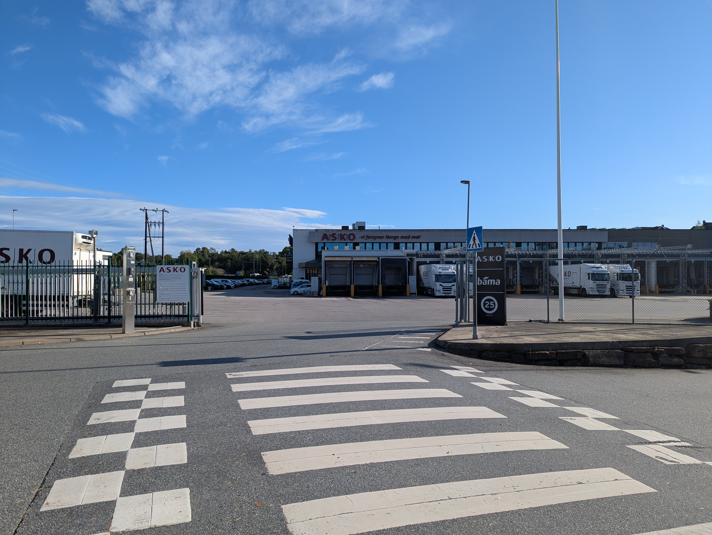
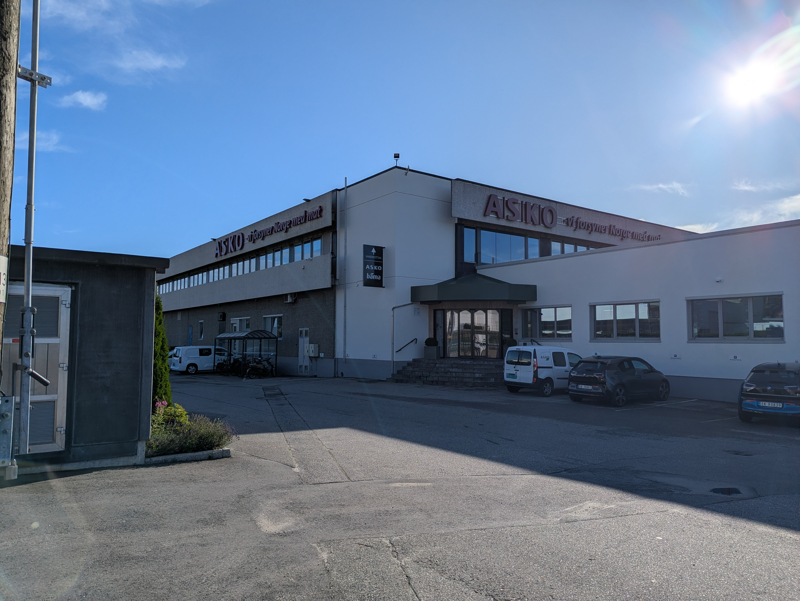
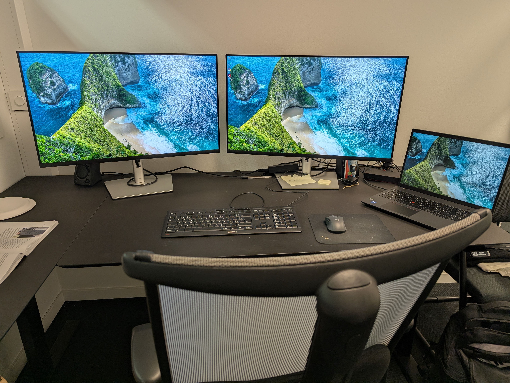

API tilkobling
Jeg utforsket muligheten til å hente data fra en tjeneste gjennom et API, men API-et var ikke ferdig satt opp.

Jeg utforsket muligheten til å hente data fra en tjeneste gjennom et API, men API-et var ikke ferdig satt opp.

Oppgaven min er å Lage en PowerBI raport som skal brukes til målstyrt ledelse. For å få dette til må jeg hente data fra ulike kilder og vaske den slik at dataen kommer i samme form.

Utfordirngene mine så langt har mest med å få vite hva jeg skal gjøre og få lisensene til å gjøre det. Jeg har enda ikke fått vite hva alle avdelingene vil at jeg skal lage for dem.